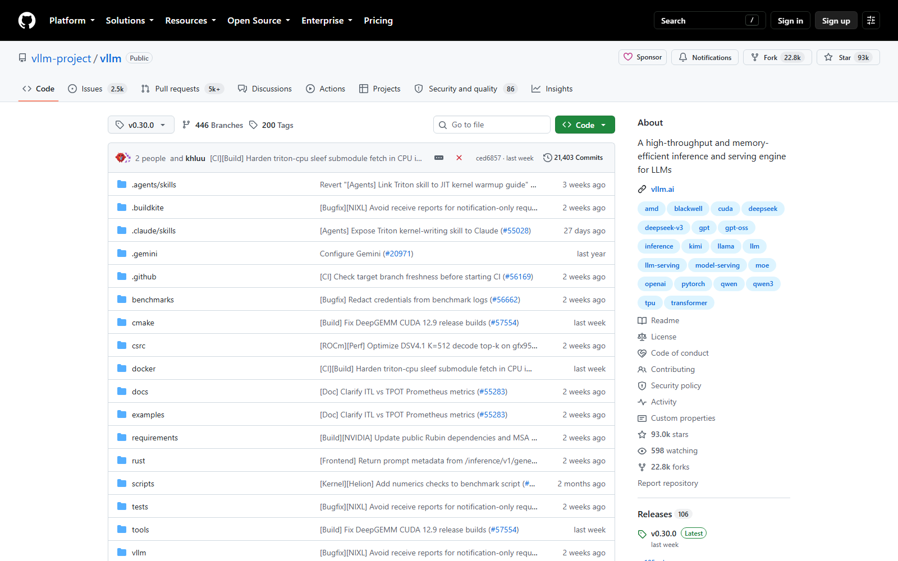
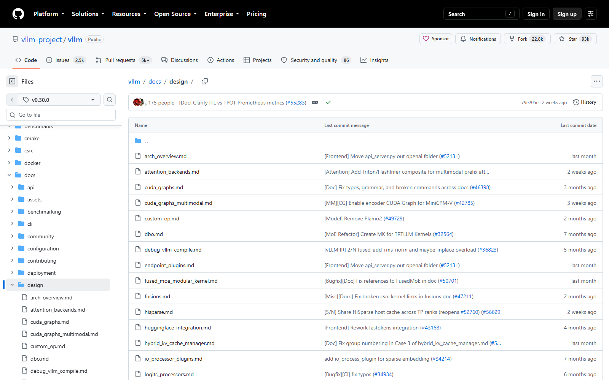
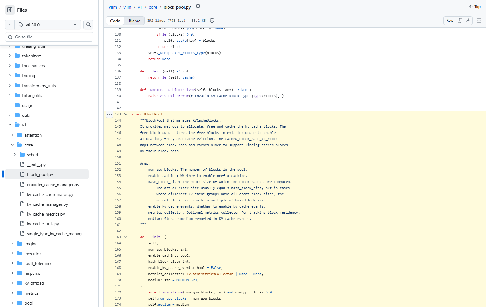

OSS PROJECT INTRO · VLLM 系列第 5 期：架构与源码导读（收官）
系列收官期。前四期你认识了它、跑通了它、看懂了原理、算清了容量，这期继续，走进源码把最后一层窗户纸捅破。先画仓库目录地图，再顺着一条请求的完整旅程走读五个据点：入口层（LLM 类与 vllm serve）、引擎心脏（EngineCore 的调度循环）、调度器（每步组批的决策者）、块池（分页 KV 的账本）、注意力后端（PagedAttention 算子的老家）。最后给一份"工程师读码路线"——照着走，你能在半天内建立自己的第一手理解。本期源码行号全部锚定 git tag v0.30.0（与系列版本基准一致，2026-09-30 核对）。
vLLM 是一个 Python 为主的仓库（性能关键处下沉到 C++/CUDA 内核），顶层结构职责清晰：vllm/ 是主包，docs/design/ 藏着官方设计文档（源码导读的第二地图），tests/v1/ 是新版引擎的行为文档，examples/ 是可跑的用法大全。主包内部，五个据点按"请求流经的顺序"排开：
| 目录 / 文件 | 职责 | 读码价值 |
|---|---|---|
vllm/entrypoints/ | 两类入口：llm.py（离线 LLM 类）、openai/（serve 的 API 服务）、cli/ | 想知道"一次调用从哪进来的"，从这开始 |
vllm/v1/engine/ | 引擎层：core.py（EngineCore 心脏）、async_llm.py（在线引擎） | 多进程分工与主循环都在这 |
vllm/v1/core/ | 调度与显存：sched/scheduler.py、block_pool.py、kv_cache_manager.py | 连续批处理与分页 KV 的全部决策逻辑 |
vllm/v1/worker/ | 执行层：gpu_worker.py、gpu_model_runner.py、block_table.py | 每卡一个 Worker 怎么把批次变成张量运算 |
vllm/v1/attention/backends/ | 注意力后端：registry.py 注册表 + flash_attn.py 等各家实现 | PagedAttention 算子的真实老家 |

来源注记——目录结构对照 github.com/vllm-project/vllm/tree/v0.30.0（2026-09-30 核对）；下文行号均锚定该 tag。
第 2 期用过的两种姿势，在源码里是两个入口：离线入口 vllm/entrypoints/llm.py——第 67 行的 class LLM，第 418 行的 generate()，脚本里三行代码跑批量的就是它；在线入口 vllm/entrypoints/openai/——vllm serve 命令拉起的 API 服务进程，把 HTTP 请求翻译成引擎调用。关键在于：两个入口最终都汇入同一个引擎对象（在线是 vllm/v1/engine/async_llm.py 的 AsyncLLM，离线经 vllm/engine/llm_engine.py 兼容层转到同一套 V1 引擎）。这就是官方架构文档强调的 uniformity：学会一次，两条路通用。入口层做得极薄——鉴权、协议转换、组装采样参数，然后就把请求交给引擎，自己不做任何推理决策。读码第一课在这里：找主线就找"数据怎么流动"，入口层的薄，正是设计好的路标。
vllm/v1/engine/core.py 第 105 行，class EngineCore——官方注释自称"Inner loop of vLLM's Engine"（引擎的内循环）。心脏只有一个动作：step()（第 589 行）——问调度器要一批活，交给执行器去算，把结果收回来。主循环就是这样一步一遍地转：
# vllm/v1/engine/core.py（v0.30.0，节选）
class EngineCore:
"""Inner loop of vLLM's Engine."""
def step(self) -> tuple[dict[int, EngineCoreOutputs], bool]:
"""Schedule, execute, and make output."""
if not self.scheduler.has_requests():
return {}, False
scheduler_output = self.scheduler.schedule(...)
# ... 交给 executor 执行模型前向，回收输出注意进程模型：EngineCoreProc（第 1019 行）把它包成了独立进程——API 服务进程通过 core_client.py 与它通信。这一层隔离的意义在第 2 期架构图里见过：接口崩溃不丢批、调度独立演进。读这个文件的正确姿势是只读 step() 前后二十行，把"调度→执行→回传"的主干走通，细节全部留到对应据点去看——引擎文件里到处是分支（多卡、多副本、容错），主线只有一条。
vllm/v1/core/sched/scheduler.py 第 79 行 class Scheduler，第 561 行的 schedule() 是全仓库最值得精读的一个方法——连续批处理就发生在每一次调用里。它每步做四件事：看预算（新 token 预算与显存水位够不够）、做准入（等待队列里谁能上批，谁继续等）、要显存（向 KV 管理器为每条请求申请或归还块）、组批次（产出 SchedulerOutput：哪些请求 prefill、哪些继续 decode、块表增量）。源码里作者留的注释非常坦诚："no prefill phase nor decoding phase"——v1 调度器不再区分预填与解码两个阶段，统一看成"每条请求还要算多少 token"，因此 chunked prefill（长输入切块）、prefix caching（前缀复用）、投机解码都自然融进同一个循环。读它的技巧：对着 SchedulerOutput 的字段读——输出结构就是调度器的全部决策，字段看懂了，策略就看懂了。

第 2 期的"块表"在源码里的家：vllm/v1/core/block_pool.py 第 143 行 class BlockPool——管理全部 KV 物理块的账本。类文档写得直白：空闲块按"逐出顺序"挂在 free_block_queue 上，分配就是从队头取块（get_new_blocks()，第 664 行），归还就是挂回队列；cached_block_hash_to_block 维护"块哈希 → 缓存块"的映射，前缀缓存命中时直接复用物理块，不重新计算。上层的 kv_cache_manager.py 按请求视角记账（每条请求一张块表），下层的 worker/block_table.py 把块表变成 GPU 上的张量供注意力算子寻址——三段合起来，就是"逻辑连续、物理打散"从 Python 字典落到显存布局的全过程。

最后一步，批次下发到 GPU Worker 后，注意力算子从哪来？答案是一个注册表模式的插件体系：vllm/v1/attention/backends/registry.py 里 AttentionBackendEnum 列出全部后端（FLASH_ATTN、TRITON_ATTN、FLEX_ATTN、各家 MLA 变体等），默认 auto——按模型形态与硬件自动挑选，也可用 --attention-backend 显式指定。每个后端实现同一套接口（backend.py 定义），输入是"本次批次的块表 + KV 缓存张量"，输出是注意力结果——PagedAttention 在实现层就是"会按块表寻址的注意力内核"，FlashAttention 等成熟内核被改造成支持分页寻址的版本，这也是"操作系统老思想 + 最新内核"的合流点。为什么默认不让你操心后端？硬件迭代太快（新卡、新内核月度刷新），把"选内核"做成注册表 + 自动选择，是它月度发版还能保持稳定的工程秘密。
把五个据点串成一条可执行的路线，按"跟着一条请求走"的顺序：第一步（30 分钟），跑通 examples/ 里最简单的离线示例，断点打在 entrypoints/llm.py 的 generate()，看请求长什么样；第二步（30 分钟），进 v1/engine/core.py 只读 EngineCore.step() 主干，确认"调度→执行"两跳；第三步（60 分钟），精读 sched/scheduler.py 的 schedule()，对照 SchedulerOutput 字段理解准入与组批；第四步（60 分钟），读 block_pool.py 的分配与归还，再回头看 kv_cache_manager.py 的请求级记账；第五步（30 分钟），在 attention/backends/registry.py 收尾，挑 flash_attn.py 的 FlashAttentionBackend（第 283 行）看一眼接口长什么样，不必读懂内核本身。三个提效习惯：tests/v1/ 当行为文档查（想确认某个行为的语义，找对应测试最准）；docs/design/ 先于源码（设计文档讲"为什么"）；对齐 tag 读码（主线更新极快，行号只在固定 tag 下有意义——本文行号锚定 v0.30.0）。
来源注记——vllm-project/vllm 仓库 v0.30.0 tag：entrypoints/llm.py、v1/engine/core.py、v1/core/sched/scheduler.py、v1/core/block_pool.py、v1/attention/backends/registry.py 均于 2026-09-30 核对。
每题点击选项立即反馈 · 共 3 题
1. 离线 LLM 类与在线 vllm serve 的关系是？
2. 调度器 schedule() 每一步不负责的事是？
3. 读 vLLM 源码，为什么行号要锚定具体 git tag？
这道题的答案写在它的发版节奏里。换来的是三样。第一，硬件红利吃到最前。注意力内核的迭代速度以月计——新卡上市、新内核（FlashAttention、FlashInfer、Triton 变体）发布，注册表加一行就能接入，auto 选择让用户"升级即提速"，不需要改任何业务代码。第二，模型形态的碎片化有解。 MLA 架构、线性注意力、Mamba 混合架构各有各的最优内核，写死任何一个都会把其他模型变成二等公民；注册表 + 按模型/硬件自动选择，让"每种形态都能落到最合适的内核"。第三，社区分工有接口。各家内核团队（FlashInfer 等）对着同一套接口贡献，vLLM 主仓库不背内核实现的维护债。付出的是两样。第一，行为不可枚举。auto 选择的组合空间大，同一个服务换张卡可能换了内核，性能与精度行为随之漂移——这是排障时的额外自由度，官方为此提供 --attention-backend 显式钉死。第二，测试矩阵膨胀。每个后端 × 每种模型 × 每代硬件的组合都要回归，社区靠 tests/v1/attention 的后端级测试与 CI 分摊。通用结论：凡是"底层组件快速迭代、上层要稳定"的系统（数据库的存储引擎、JVM 的 GC、浏览器的 JS 引擎），最后都长成注册表 + 自动选择——代价是把"确定性"从编译期挪到了配置期，用户多了一个"要不要钉死版本"的决策点。
试着写这张卡片，每句都必须经得起追问。第一句，它是谁：vLLM 是生产级 LLM 推理与服务引擎（Apache-2.0），从一篇 SOSP 论文起家，治的病是 KV 缓存的显存浪费——把这话说在前面，是为了把它与聊天工具、训练框架划清界限。第二句，两门绝技：PagedAttention 分页管理 KV 缓存（浪费压到 4% 以内）+ Continuous Batching 每步重组批（随到随进、说完即退），吞吐数字全从这两处来——追问"为什么快"就答这句。第三句，怎么跑：Linux 加 CUDA 环境，vllm serve 模型名 一条命令起 OpenAI 兼容服务，三参数模型：水位 0.92 圈显存、max-model-len 定单条、两者定并发——追问"怎么上手指"就答这句。第四句，怎么算容量：三本账（权重房租、KV 池弹性、激活水电），用 vllm bench serve 阶梯压测，工作点定在 P99 起飞之前——追问"买几张卡"就答这句，并附上你自己的压测曲线。第五句，边界在哪：它是推理引擎不是训练框架；单机多卡用 TP，再往上有多副本与调度生态；个人电脑本地玩用不着它——追问"什么不该用它"就答这句。一张卡片五句话，每句背后都站着这五期的一期：认识、跑起来、原理、容量、源码——这也是这个系列想留给你的读开源项目的方法论：定位、上手、原理、容量、源码，五步一圈，下一个项目你可以自己走。
vLLM 五期系列，浓缩成五句话：
版本与素材口径：全系列基于 vLLM v0.30.0（GitHub Latest，2026-09-22 发布，2026-09-30 核对）；源码导读期行号锚定 git tag v0.30.0；素材来自官方仓库、官方文档与官方博客。延伸阅读认准官方：docs.vllm.ai 官方文档、官方博客、GitHub 仓库。
五期收官，感谢一路跟练。回到课程目录，下一个开源项目等你拆解。